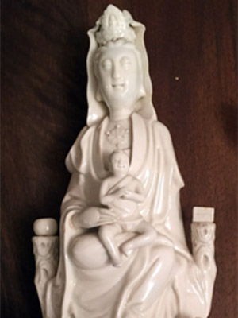

Seated Guanyin with Child and two companions, China, Dehua,
Qing Dynasty (1644 - 1911), Kangxi era (1662 - 1722),
2nd Half of the 17th Century. Porcelain. H. 38 cm
Porcelain figure of Guanyin, wearing a long draped robe, a diadem on the head and
jewellery around the neck, seated on a throne with the right leg bent and holding a baby on
her lap; two small boys stand at the sides of the throne and two water dragons among waves are
depicted beneath the throne.
Guanyin, the Goddess of Compassion, is one of the most popular Buddhist deities in China.
Her figure originated in India as the male bodhisattva Avalokitesvara; after the introduction of
Buddhism in China, he was transformed into a female deity associated with the virtues of compassion
and mercy. Guanyin was also worshipped in China as the patron of fishermen, and by women as the
goddess 'bringer of sons'. (9)